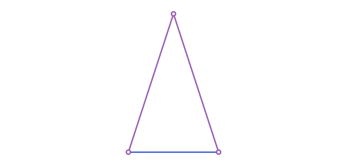
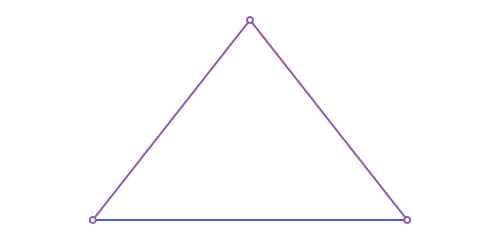
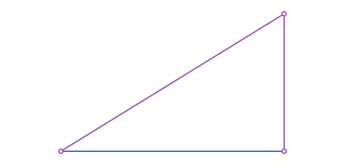
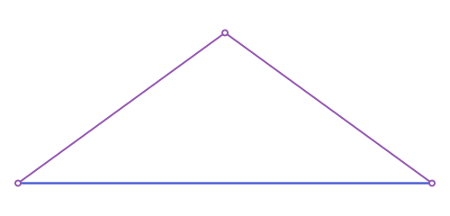
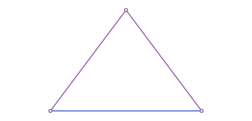
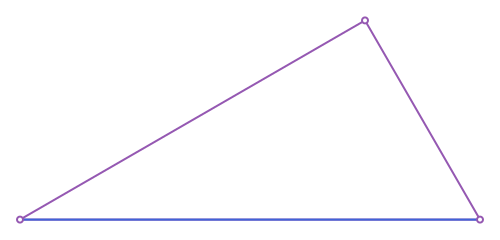
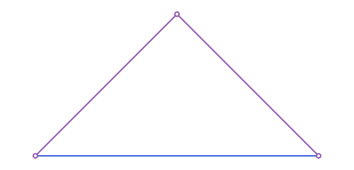

Triangles: Inscribed Squares & Triangles on a Segment
The running example, the scalene triangle used throughout this page:
using Apollonius
A, B, C = APPoint(0.0, 0.0), APPoint(8.0, 0.0), APPoint(3.0, 6.0)
t = APTriangle(A, B, C)Inscribed squares
square_inscribed(t, i) builds the square with one side on the side opposite t[i] and its other two vertices exactly on the two sides through t[i], returned as an APQuadrilateral. There are 3 such squares (one per side, hence the vertex index):
sq = square_inscribed(t, 1)
distance(sq[1], sq[2]), distance(sq[2], sq[3]) # equal: it really is a square(3.4393760040689854, 3.4393760040689854)
Its side length is a*h / (a+h) (a the base length, h the corresponding height) regardless of how oblique the triangle is, a classical fact that falls out of simple similar-triangles reasoning once you set up coordinates with the base on an axis.
Triangles built on a segment
A different family of constructors, analogous to square_on_segment (see Polygons: Named Constructors & Quadrilaterals): each takes a base segment [a, b] and returns the classical named triangle with that segment as one side (or, for the two "hypotenuse" ones, as the hypotenuse), plus a ccw::Bool=true keyword picking which side of [a, b] the third vertex falls on.
| Function | Triangle |
|---|---|
equilateral_triangle_on_segment | equilateral, side [a, b] |
isosceles_triangle_on_segment | isosceles, base [a, b], given leg length |
triangle_30_60_90_on_segment | right triangle, hypotenuse [a, b], angles 30°/60° at a/b |
isosceles_right_triangle_on_segment | isosceles right triangle, hypotenuse [a, b] (via Thales' theorem) |
golden_triangle_on_segment | isosceles 72°-72°-36°, base [a, b] |
golden_gnomon_on_segment | isosceles 36°-36°-108° (the golden gnomon), base [a, b] |
egyptian_triangle_on_segment | 3-4-5 right triangle, [a, b] the "4" side, right angle at b |
cheops_triangle_on_segment | isosceles with sides in the ratio 2 : φ : φ, base [a, b] (the profile of the Cheops pyramid) |
golden_right_triangle_on_segment | right triangle with legs in the golden ratio, [a, b] the long leg, right angle at b |
triangle_on_segment | generic ASA: base [a, b], given angle at a and at b |
triangle_on_segment_sas | generic SAS: base [a, b], given angle and side length at one vertex |
triangle_on_segment_ssa | generic SSA: base [a, b], an angle at one vertex, and the length of the opposite side (0/1/2 solutions) |
triangle_on_segment_sss | generic SSS: base [a, b] and both new side lengths |
The 72°-72°-36° triangle of Euclid is golden_triangle_on_segment, and the 30°-60°-90° "school" triangle is triangle_30_60_90_on_segment.
Every fixed-shape constructor above is really just a named call into one of these four: golden_triangle_on_segment(a, b) is triangle_on_segment(a, b, 2pi/5, 2pi/5), isosceles_triangle_on_segment(a, b, leg) is triangle_on_segment_sss(a, b, leg, leg), and so on. Reach for the generic form directly whenever the triangle you want isn't one of the named ones.
p1, p2 = APPoint(0.0, 0.0), APPoint(6.0, 0.0)
golden_triangle_on_segment(p1, p2) # apex angle 36°, both base angles 72°APTriangle([0.0, 0.0], [6.0, 0.0], [2.9999999999999996, 9.233050611525757])
egyptian_triangle_on_segment(p1, p2) # legs 4:3 (here 6:4.5), hypotenuse 5 (here 7.5)APTriangle([0.0, 0.0], [6.0, 0.0], [6.0, 4.5])
cheops = cheops_triangle_on_segment(p1, p2) # sides in ratio 2:φ:φ (Cheops profile)
distance(cheops[1], cheops[3]) / distance(p1, p2) # φ/20.8090169943749475
gr = golden_right_triangle_on_segment(p1, p2) # right angle at p2, legs in the golden ratio
distance(p1, p2) / distance(gr[2], gr[3]), rad2deg(angle_measure_at(gr[2], gr[1], gr[3])) # φ, 90°(1.618033988749895, 90.0)
eq = equilateral_triangle_on_segment(p1, p2)
distance(eq[1], eq[2]), distance(eq[2], eq[3]), distance(eq[3], eq[1]) # all 3 equal(6.0, 5.999999999999999, 6.000000000000001)
gnomon = golden_gnomon_on_segment(p1, p2) # base angles 36°, apex angle 108°
rad2deg(angle_measure_at(gnomon[1], gnomon[3], gnomon[2])), rad2deg(angle_measure_at(gnomon[3], gnomon[1], gnomon[2]))(36.0, 108.0)
iso = isosceles_triangle_on_segment(p1, p2, 5.0) # base [p1,p2], legs of length 5
distance(iso[1], iso[3]) ≈ 5.0, distance(iso[2], iso[3]) ≈ 5.0(true, true)
r306090 = triangle_30_60_90_on_segment(p1, p2) # hypotenuse [p1,p2]
rad2deg(angle_measure_at(r306090[1], r306090[2], r306090[3])), rad2deg(angle_measure_at(r306090[2], r306090[1], r306090[3]))(30.000000000000004, 59.99999999999999)
isr = isosceles_right_triangle_on_segment(p1, p2) # hypotenuse [p1,p2], via Thales
rad2deg(angle_measure_at(isr[3], isr[1], isr[2])) # 90°: the right angle sits opposite the hypotenuse90.00000000000001
The four generic constructors behind all of the above, named after which three measurements pin the triangle down. ASA, given both base angles:
asa = triangle_on_segment(p1, p2, deg2rad(50), deg2rad(70))
rad2deg(angle_measure_at(asa[1], asa[2], asa[3])), rad2deg(angle_measure_at(asa[2], asa[1], asa[3]))(50.0, 70.0)SAS, given a side length and the angle it makes with the base at one vertex (at=:a or at=:b):
sas = triangle_on_segment_sas(p1, p2, deg2rad(60), 4.0; at=:b)
distance(sas[2], sas[3]), rad2deg(angle_measure_at(sas[2], sas[1], sas[3]))(4.0, 59.99999999999999)SSS, given both new side lengths:
sss = triangle_on_segment_sss(p1, p2, 5.0, 7.0)
distance(sss[1], sss[3]), distance(sss[2], sss[3])(5.0, 7.0)SSA, given an angle at one vertex and the length of the side opposite it, is the classically ambiguous case: depending on the numbers, 0, 1 or 2 triangles satisfy it. With 2 solutions, second_solution=false (the default) picks the one with the larger angle at the other base vertex:
ssa1 = triangle_on_segment_ssa(p1, p2, deg2rad(40), 4.5; at=:a)
ssa2 = triangle_on_segment_ssa(p1, p2, deg2rad(40), 4.5; at=:a, second_solution=true)
distance(ssa1[2], ssa1[3]) ≈ 4.5, distance(ssa2[2], ssa2[3]) ≈ 4.5, ssa1[3] ≈ ssa2[3](true, true, false)